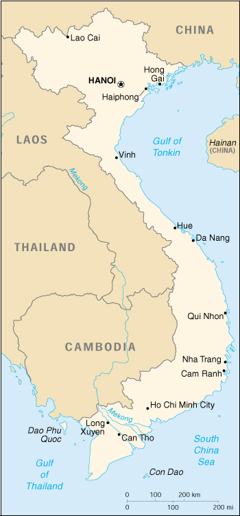

|
Vietnam | |
| Introduction Geography People Government Economy Communications Transportation Military Transnational Issues | ||
|  | ||
| Vietnam | Introduction | Top of Page |
| Background: | France occupied all of Vietnam by 1884. Independence was declared after World War II, but the French continued to rule until 1954 when they were defeated by communist forces under Ho Chi MINH, who took control of the north. US economic and military aid to South Vietnam grew through the 1960s in an attempt to bolster the government, but US armed forces were withdrawn following a cease-fire agreement in 1973. Two years later North Vietnamese forces overran the south. Economic reconstruction of the reunited country has proven difficult as aging Communist Party leaders have only grudgingly initiated reforms necessary for a free market. |
| Vietnam | Geography | Top of Page |
| Location: | Southeastern Asia, bordering the Gulf of Thailand, Gulf of Tonkin, and South China Sea, alongside China, Laos, and Cambodia |
| Geographic coordinates: | 16 00 N, 106 00 E |
| Map references: | Southeast Asia |
| Area: |
total:
329,560 sq km
land: 325,360 sq km water: 4,200 sq km |
| Area - comparative: | slightly larger than New Mexico |
| Land boundaries: |
total:
4,639 km
border countries: Cambodia 1,228 km, China 1,281 km, Laos 2,130 km |
| Coastline: | 3,444 km (excludes islands) |
| Maritime claims: |
contiguous zone:
24 NM
continental shelf: 200 NM or to the edge of the continental margin exclusive economic zone: 200 NM territorial sea: 12 NM |
| Climate: | tropical in south; monsoonal in north with hot, rainy season (mid-May to mid-September) and warm, dry season (mid-October to mid-March) |
| Terrain: | low, flat delta in south and north; central highlands; hilly, mountainous in far north and northwest |
| Elevation extremes: |
lowest point:
South China Sea 0 m
highest point: Ngoc Linh 3,143 m |
| Natural resources: | phosphates, coal, manganese, bauxite, chromate, offshore oil and gas deposits, forests, hydropower |
| Land use: |
arable land:
17%
permanent crops: 4% permanent pastures: 1% forests and woodland: 30% other: 48% (1993 est.) |
| Irrigated land: | 18,600 sq km (1993 est.) |
| Natural hazards: | occasional typhoons (May to January) with extensive flooding |
| Environment - current issues: | logging and slash-and-burn agricultural practices contribute to deforestation and soil degradation; water pollution and overfishing threaten marine life populations; groundwater contamination limits potable water supply; growing urban industrialization and population migration are rapidly degrading environment in Hanoi and Ho Chi Minh City |
| Environment - international agreements: |
party to:
Biodiversity, Climate Change, Desertification, Endangered Species, Environmental Modification, Hazardous Wastes, Law of the Sea, Ozone Layer Protection, Ship Pollution, Wetlands
signed, but not ratified: Climate Change-Kyoto Protocol, Nuclear Test Ban |
| Vietnam | People | Top of Page |
| Population: | 79,939,014 (July 2001 est.) |
| Age structure: |
0-14 years:
32.13% (male 13,266,585; female 12,415,384)
15-64 years: 62.44% (male 24,357,343; female 25,556,187) 65 years and over: 5.43% (male 1,722,094; female 2,621,421) (2001 est.) |
| Population growth rate: | 1.45% (2001 est.) |
| Birth rate: | 21.23 births/1,000 population (2001 est.) |
| Death rate: | 6.22 deaths/1,000 population (2001 est.) |
| Net migration rate: | -0.49 migrant(s)/1,000 population (2001 est.) |
| Sex ratio: |
at birth:
1.07 male(s)/female
under 15 years: 1.07 male(s)/female 15-64 years: 0.95 male(s)/female 65 years and over: 0.66 male(s)/female total population: 0.97 male(s)/female (2001 est.) |
| Infant mortality rate: | 30.24 deaths/1,000 live births (2001 est.) |
| Life expectancy at birth: |
total population:
69.56 years
male: 67.12 years female: 72.19 years (2001 est.) |
| Total fertility rate: | 2.49 children born/woman (2001 est.) |
| HIV/AIDS - adult prevalence rate: | 0.24% (1999 est.) |
| HIV/AIDS - people living with HIV/AIDS: | 100,000 (1999 est.) |
| HIV/AIDS - deaths: | 2,500 (1999 est.) |
| Nationality: |
noun:
Vietnamese (singular and plural)
adjective: Vietnamese |
| Ethnic groups: | Vietnamese 85%-90%, Chinese, Hmong, Thai, Khmer, Cham, mountain groups |
| Religions: | Buddhist, Hoa Hao, Cao Dai, Christian (predominantly Roman Catholic, some Protestant), indigenous beliefs, Muslim |
| Languages: | Vietnamese (official), English (increasingly favored as a second language), some French, Chinese, and Khmer; mountain area languages (Mon-Khmer and Malayo-Polynesian) |
| Literacy: |
definition:
age 15 and over can read and write
total population: 93.7% male: 96.5% female: 91.2% (1995 est.) |
| Vietnam | Government | Top of Page |
| Country name: |
conventional long form:
Socialist Republic of Vietnam
conventional short form: Vietnam local long form: Cong Hoa Xa Hoi Chu Nghia Viet Nam local short form: Viet Nam abbreviation: SRV |
| Government type: | Communist state |
| Capital: | Hanoi |
| Administrative divisions: | 58 provinces (tinh, singular and plural), 3 municipalities* (thu do, singular and plural); An Giang, Bac Giang, Bac Kan, Bac Lieu, Bac Ninh, Ba Ria-Vung Tau, Ben Tre, Binh Dinh, Binh Duong, Binh Phuoc, Binh Thuan, Ca Mau, Can Tho, Cao Bang, Dac Lak, Da Nang, Dong Nai, Dong Thap, Gia Lai, Ha Giang, Hai Duong, Hai Phong*, Ha Nam, Ha Noi*, Ha Tay, Ha Tinh, Hoa Binh, Ho Chi Minh*, Hung Yen, Khanh Hoa, Kien Giang, Kon Tum, Lai Chau, Lam Dong, Lang Son, Lao Cai, Long An, Nam Dinh, Nghe An, Ninh Binh, Ninh Thuan, Phu Tho, Phu Yen, Quang Binh, Quang Nam, Quang Ngai, Quang Ninh, Quang Tri, Soc Trang, Son La, Tay Ninh, Thai Binh, Thai Nguyen, Thanh Hoa, Thua Thien-Hue, Tien Giang, Tra Vinh, Tuyen Quang, Vinh Long, Vinh Phuc, Yen Bai |
| Independence: | 2 September 1945 (from France) |
| National holiday: | Independence Day, 2 September (1945) |
| Constitution: | 15 April 1992 |
| Legal system: | based on communist legal theory and French civil law system |
| Suffrage: | 18 years of age; universal |
| Executive branch: |
chief of state:
President Tran Duc LUONG (since 24 September 1997) and Vice President Nguyen Thi BINH (since NA October 1992)
head of government: Prime Minister Phan Van KHAI (since 25 September 1997); First Deputy Prime Minister Nguyen Tan DUNG (since 29 September 1997); Deputy Prime Ministers Nguyen Cong TAN (since 29 September 1997), Nguyen Manh CAM (since 29 September 1997), and Pham Gia KHIEM (since 29 September 1997) cabinet: Cabinet appointed by the president on the proposal of the prime minister and ratification of the National Assembly elections: president elected by the National Assembly from among its members for a five-year term; election last held 25 September 1997 (next to be held when National Assembly meets following legislative elections in NA 2002); prime minister appointed by the president from among the members of the National Assembly; deputy prime ministers appointed by the prime minister election results: Tran Duc LUONG elected president; percent of National Assembly vote - NA% |
| Legislative branch: |
unicameral National Assembly or Quoc-Hoi (450 seats; members elected by popular vote to serve five-year terms)
elections: last held 20 July 1997 (next to be held NA 2002) election results: percent of vote by party - CPV 92%, other 8% (the 8% are not CPV members but are approved by the CPV to stand for election); seats by party - CPV or CPV-approved 450 |
| Judicial branch: | Supreme People's Court (chief justice is elected for a five-year term by the National Assembly on the recommendation of the president) |
| Political parties and leaders: | only party - Communist Party of Vietnam or CPV [Le Kha PHIEU, general secretary] |
| Political pressure groups and leaders: | none |
| International organization participation: | ACCT, APEC, ARF, AsDB, ASEAN, CCC, ESCAP, FAO, G-77, IAEA, IBRD, ICAO, ICRM, IDA, IFAD, IFC, IFRCS, ILO, IMF, IMO, Inmarsat, Intelsat, Interpol, IOC, IOM (observer), ISO, ITU, NAM, OPCW, UN, UNCTAD, UNESCO, UNIDO, UPU, WFTU, WHO, WIPO, WMO, WToO, WTrO (observer) |
| Diplomatic representation in the US: |
chief of mission:
Ambassador-designate Nguyen Tam CHIEN
chancery: 1233 20th Street NW, Washington, DC 20036, Suite 400 telephone: [1] (202) 861-0737 FAX: [1] (202) 861-0917 consulate(s) general: San Francisco |
| Diplomatic representation from the US: |
chief of mission:
Ambassador Douglas B. "Pete" PETERSON
embassy: 7 Lang Ha Road, Ba Dinh District, Hanoi mailing address: PSC 461, Box 400, FPO AP 96521-0002 telephone: [84] (4) 8431500 FAX: [84] (4) 8351510 consulate(s) general: Ho Chi Minh City |
| Flag description: | red with a large yellow five-pointed star in the center |
| Vietnam | Economy | Top of Page |
| Economy - overview: | Vietnam is a poor, densely populated country that has had to recover from the ravages of war, the loss of financial support from the old Soviet Bloc, and the rigidities of a centrally planned economy. Substantial progress was achieved from 1986 to 1996 in moving forward from an extremely low starting point - growth averaged around 9% per year from 1993 to 1997. The 1997 Asian financial crisis highlighted the problems existing in the Vietnamese economy but, rather than prompting reform, reaffirmed the government's belief that shifting to a market oriented economy leads to disaster. GDP growth of 8.5% in 1997 fell to 6% in 1998 and 5% in 1999. Growth continued at the moderately strong level of 5.5%, a level that should be matched in 2001. These numbers mask some major difficulties in economic performance. Many domestic industries, including coal, cement, steel, and paper, have reported large stockpiles of inventory and tough competition from more efficient foreign producers; this problem apparently eased in 2000. Foreign direct investment fell dramatically, from $8.3 billion in 1996 to about $1.6 billion in 1999. Meanwhile, Vietnamese authorities have moved slowly in implementing the structural reforms needed to revitalize the economy and produce more competitive, export-driven industries. |
| GDP: | purchasing power parity - $154.4 billion (2000 est.) |
| GDP - real growth rate: | 5.5% (2000 est.) |
| GDP - per capita: | purchasing power parity - $1,950 (2000 est.) |
| GDP - composition by sector: |
agriculture:
25%
industry: 35% services: 40% (1999 est.) |
| Population below poverty line: | 37% (1998 est.) |
| Household income or consumption by percentage share: |
lowest 10%:
3.5%
highest 10%: 29% (1993) |
| Inflation rate (consumer prices): | -0.6% (2000 est.) |
| Labor force: | 38.2 million (1998 est.) |
| Labor force - by occupation: | agriculture 67%, industry and services 33% (1997 est.) |
| Unemployment rate: | 25% (1995 est.) |
| Budget: |
revenues:
$5.3 billion
expenditures: $5.6 billion, including capital expenditures of $1.8 billion (1999 est.) |
| Industries: | food processing, garments, shoes, machine building, mining, cement, chemical fertilizer, glass, tires, oil, coal, steel, paper |
| Industrial production growth rate: | 10.7% (2000 est.) |
| Electricity - production: | 22.985 billion kWh (1999) |
| Electricity - production by source: |
fossil fuel:
47.71%
hydro: 52.29% nuclear: 0% other: 0% (1999) |
| Electricity - consumption: | 21.376 billion kWh (1999) |
| Electricity - exports: | 0 kWh (1999) |
| Electricity - imports: | 0 kWh (1999) |
| Agriculture - products: | paddy rice, corn, potatoes, rubber, soybeans, coffee, tea, bananas, sugar; poultry, pigs; fish |
| Exports: | $14.3 billion (f.o.b., 2000 est.) |
| Exports - commodities: | crude oil, marine products, rice, coffee, rubber, tea, garments, shoes |
| Exports - partners: | China, Japan, Germany, Australia, US, France, Singapore, UK, Taiwan |
| Imports: | $15.2 billion (f.o.b., 2000 est.) |
| Imports - commodities: | machinery and equipment, petroleum products, fertilizer, steel products, raw cotton, grain, cement, motorcycles |
| Imports - partners: | Japan, Singapore, South Korea, Taiwan, China, Thailand, Hong Kong, Malaysia, Indonesia, France, US, Sweden |
| Debt - external: | $13.2 billion (2000) |
| Economic aid - recipient: | $2.1 billion in credits and grants pledged by international donors for 2000 |
| Currency: | dong (VND) |
| Currency code: | VND |
| Exchange rates: | dong per US dollar - 14,530 (January 2001), 14,020 (January 2000), 13,900 (December 1998), 11,100 (December 1996), 11,193 (1995 average), 11,000 (October 1994) |
| Fiscal year: | calendar year |
| Vietnam | Communications | Top of Page |
| Telephones - main lines in use: | 2.6 million (2000) |
| Telephones - mobile cellular: | 730,155 (2000) |
| Telephone system: |
general assessment:
Vietnam is putting considerable effort into modernization and expansion of its telecommunication system, but its performance continues to lag behind that of its more modern neighbors
domestic: all provincial exchanges are digitalized and connected to Hanoi, Da Nang, and Ho Chi Minh City by fiber-optic cable or microwave radio relay networks; since 1991, main lines in use have been substantially increased and the use of mobile telephones is growing rapidly international: satellite earth stations - 2 Intersputnik (Indian Ocean region) |
| Radio broadcast stations: | AM 65, FM 7, shortwave 29 (1999) |
| Radios: | 8.2 million (1997) |
| Television broadcast stations: | at least 7 (plus 13 repeaters) (1998) |
| Televisions: | 3.57 million (1997) |
| Internet country code: | .vn |
| Internet Service Providers (ISPs): | 5 (2000) |
| Internet users: | 121,000 (2000) |
| Vietnam | Transportation | Top of Page |
| Railways: |
total:
2,652 km
standard gauge: 166 km 1.435-m gauge narrow gauge: 2,249 km 1.000-m gauge dual gauge: 237 km NA-m gauges (three rails) (1998) |
| Highways: |
total:
93,300 km
paved: 23,418 km unpaved: 69,882 km (1996) |
| Waterways: |
17,702 km
note: more than 5,149 km are navigable at all times by vessels up to 1.8 m draft |
| Pipelines: | petroleum products 150 km |
| Ports and harbors: | Cam Ranh, Da Nang, Haiphong, Ho Chi Minh City, Ha Long, Quy Nhon, Nha Trang, Vinh, Vung Tau |
| Merchant marine: |
total:
143 ships (1,000 GRT or over) totaling 705,388 GRT/1,071,902 DWT
ships by type: bulk 8, cargo 108, chemical tanker 1, combination bulk 1, container 2, liquefied gas 2, petroleum tanker 18, refrigerated cargo 3 (2000 est.) |
| Airports: | 34 (2000 est.) |
| Airports - with paved runways: |
total:
17
over 3,047 m: 8 2,438 to 3,047 m: 3 1,524 to 2,437 m: 4 under 914 m: 2 (2000 est.) |
| Airports - with unpaved runways: |
total:
17
over 3,047 m: 1 1,524 to 2,437 m: 1 914 to 1,523 m: 7 under 914 m: 8 (2000 est.) |
| Vietnam | Military | Top of Page |
| Military branches: | People's Army of Vietnam (PAVN) (includes Ground Forces, Navy, and Air Force), Coast Guard |
| Military manpower - military age: | 17 years of age |
| Military manpower - availability: | males age 15-49: 21,704,588 (2001 est.) |
| Military manpower - fit for military service: | males age 15-49: 13,673,438 (2001 est.) |
| Military manpower - reaching military age annually: | males: 961,124 (2001 est.) |
| Military expenditures - dollar figure: | $650 million (FY98) |
| Military expenditures - percent of GDP: | 2.5% (FY98) |
| Vietnam | Transnational Issues | Top of Page |
| Disputes - international: | maritime boundary with Cambodia not defined; involved in a complex dispute over the Spratly Islands with China, Malaysia, Philippines, Taiwan, and possibly Brunei; maritime boundary agreement with China in the Gulf of Tonkin awaits ratification; Paracel Islands occupied by China but claimed by Vietnam and Taiwan; portions of boundary with Cambodia are in dispute; agreement on land border with China was signed in December 1999, but details of alignment have not yet been made public |
| Illicit drugs: | minor producer of opium poppy with 2,100 hectares cultivated in 1999, capable of producing 11 metric tons of opium; probable minor transit point for Southeast Asian heroin; opium/heroin/methamphetamine addiction problems |
{kind=link}
{kind=link}